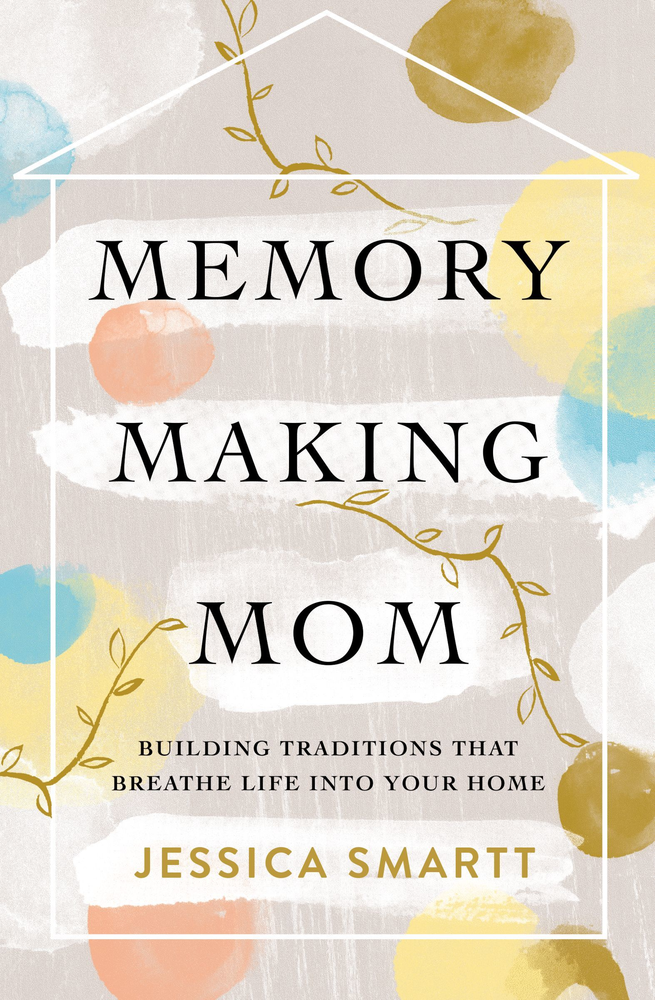

These books focus on the why and how of any of these topics: reading aloud, home cooking, mealtime, and holding family traditions. I highly recommend them!




This cookbook gives you basic ideas of traditional American food to serve for the major holidays all year round. It is the source for most of the recipes I have in the lists on this site.

If your family needs to avoid gluten and/or elements from other grains, you can find alternative recipes in these cookbooks: